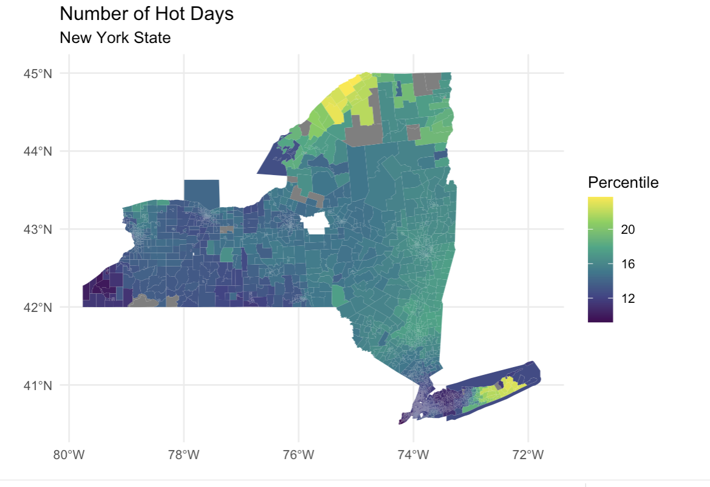
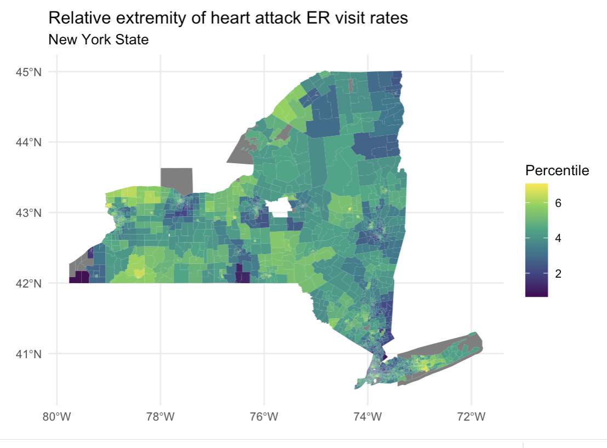
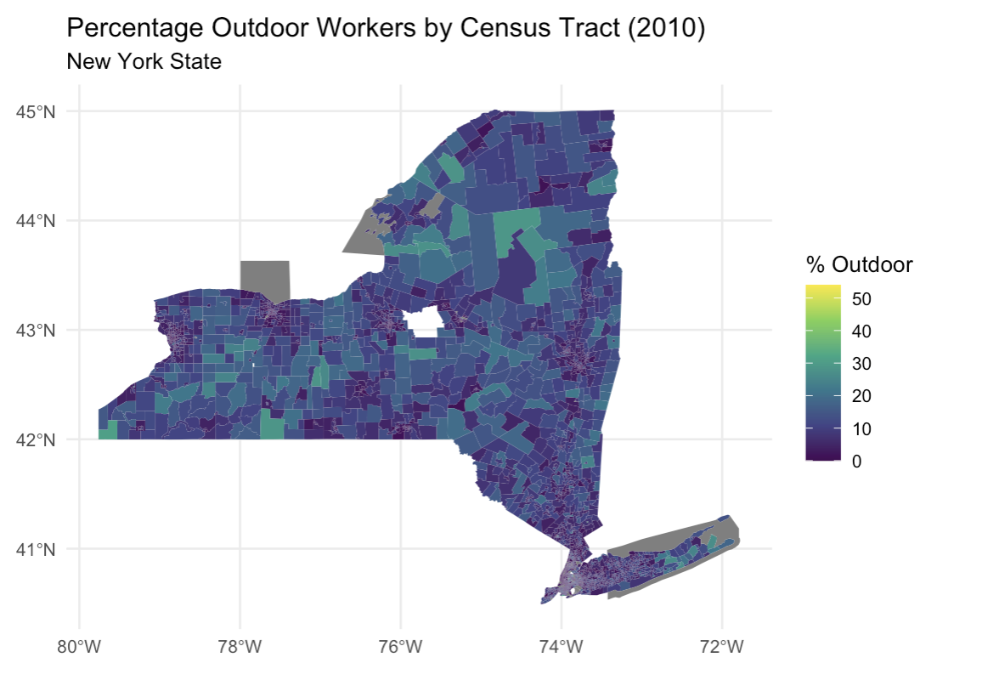
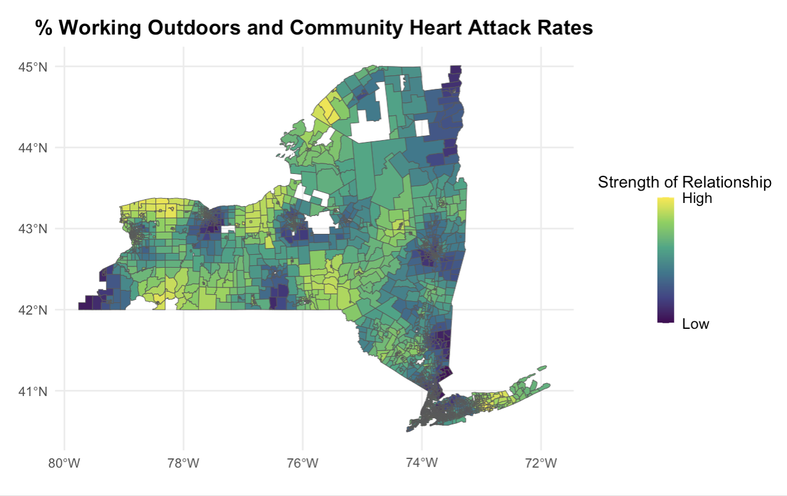

In most contemporary indexes of social vulnerability, working outside is considered to be a source of vulnerability. In this project, I was interested in evaluating whether or not there was a geographical component in how vulnerable somebody working outdoors is, and whether or not there was an urban-rural narrative to be explored. Using data provided by Adamo and Squires (2024), I used community-level data, asking the question, “How does the percentage of people working outdoors affect community-level health outcomes?” The main health outcome that I operationalized was the rate of ER visits for Heart Attacks — this can often be made more severe or brought about by working outside because of exposure to heat and poor air quality, making it a top candidate for a community-wide health outcome if there were one.
The first thing that I did was map out my main variables, confirming that there was a spatial element to explore.
  Using a Geographically Weighted Regression (GWR), the results of my project suggested that communities with higher percentages of outdoor workers were at higher risk of poor health outcomes, and that this was worse in areas that had poor environmental conditions such as low tree cover and poor air quality. The type of model that I used corrected for spatial error, subsuming some other geography-related effects.
I then mapped out the coefficients by census tract, aiming to understand where this relationship is the strongest.
GIS, R (for statistical analysis and regression), and HTML/CSS for documentation.